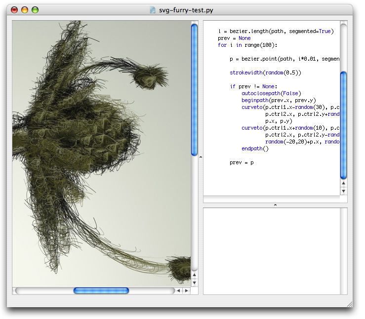

Description
The SVG library gives control over vector work imported into NodeBox. Rectangles, circles and paths from an SVG file are imported as native NodeBox paths, so their individual points and colors can be manipulated (see the tutorial on Paths).
"SVG" means Scalable Vector Graphics and is an XML format. You can save SVG files from Inkscape and Illustrator. Hand-draw your shapes there and then manipulate them further in NodeBox.
The SVG library has been tested for the following Illustrator functionalities: rectangles, ellipses, polygons, lines, curves constructed with the pen-tool, fill colors, stroke colors, stroke widths and transparency. Complicated things like gradient fills are ignored.
Download
| svg.zip (400KB) Last updated for NodeBox 1.9.4.5 Licensed under GPL Author: Tom De Smedt |
Documentation
- How to get the library up and running
- Preparing SVG files
- Importing SVG files
- A simple path filter
- Transforming a group of paths
How to get the library up and running
Put the svg library folder in the same folder as your script so NodeBox can find the library. You can also put it in ~/Library/Application Support/NodeBox/.
svg = ximport("svg")
Preparing SVG files
To export files as SVG from Adobe Illustrator do the following:
- Choose File > Save As...
- In the file dialog, select "SVG (svg)" (not "SVG Compressed" - we can't read compressed files)
- In the next window, choose "SVG Tiny 1.2" as the SVG Profile.
The regular SVG format saves all swatches and patterns, which is useless outside of Illustrator. Leave the rest of the settings as-is.

Importing SVG files
parse(str, cached=False)
The parse() command reads SVG source and returns a list of paths that are drawable with drawpath(). The command has an optional cached parameter. When set to True, the SVG source is analyzed only once and the parsed paths stored in memory so they load faster.
Each returned path in the list has the following properties:
- path.closed: is set to True when the path is closed
- path.fill: the fill color of the path in the SVG file
- path.stroke: the stroke color of the path in the SVG file
- path.strokewidth: the stroke width of the path in the SVG file.
These can be used to copy color information from the original vector drawing. Read the tutorial on paths to see what you can do with the points of a path.
For example, here's one of Ludivine Lechat's Illustrator drawings. We can import the paths into NodeBox. Those that have a fill color will retain their original fill.

data = open("flower.svg").read() paths = svg.parse(data) for path in paths: try: fill(path.fill) except: fill(random(), 0, 0) drawpath(path)
In the following example we override the colors in the original document. We only fill paths that are closed, in shades of the same color:

A simple path filter
Since all of the imported artwork are standard NodeBox paths, I can also manipulate them with path mathematics, transform them like the LetterKnitter. After some fumbling with paths and a nice gradient background, here is a hairy version of our flower. The bottom paths are darker to create a sense of depth.

Below is some example code used to alter the path.
You can see it in use in the Superfolia project in the gallery.
def draw_furry(path): prev = None autoclosepath(False) nofill() for pt in path.points(100): stroke(1, 0.5) strokewidth(random(0.5)) if prev != None: beginpath(prev.x, prev.y) curveto( pt.ctrl1.x - random(30), pt.ctrl1.y, pt.ctrl2.x, pt.ctrl2.y + random(30), pt.x, pt.y ) curveto( pt.ctrl1.x + random(10), pt.ctrl1.y, pt.ctrl2.x, pt.ctrl2.y - random(10), pt.x + random(-20, 20), pt.y + random(-20, 20) ) endpath() prev = pt
More path filters can be found here.
Transforming a group of paths
When you import an SVG file a list of paths is returned. All of these paths may make up a single drawing and you may encounter difficulties when rotating and scaling the drawing a whole. Below are two commands to help you along.
The first command, bounds(), calculates the position and total size of a list of paths. The second command, drawpaths(), draws all of the paths rotating and scaling from the given origin. By default origin is (0.5, 0.5) which means the center of the group.
def bounds(paths=[]): """ Returns (x, y), (width, height) bounds for a group of paths. """ if len(paths) == 0: return (0,0), (0,0) l = t = float("inf") r = b = float("-inf") for path in paths: (x, y), (w, h) = path.bounds l = min(l, x) t = min(t, y) r = max(r, x+w) b = max(b, y+h) return (l, t), (r-l, b-t)
def drawpaths(paths=[], x=0, y=0, rotate=0, scale=1.0, origin=(0.5,0.5)): """ Draws a group of paths that rotate and scale from the given origin. """ _ctx.transform(CORNER) _ctx.push() _ctx.translate(x, y) _ctx.rotate(rotate) _ctx.scale(scale) (x, y), (w, h) = bounds(paths) _ctx.translate((-x-w)*origin[0], (-y-h)*origin[1]) for path in paths: #_ctx.fill(path.fill) #_ctx.stroke(path.stroke) #_ctx.strokewidth(path.strokewidth) # Use copies of the paths that adhere to the transformations. _ctx.drawpath(path.copy()) _ctx.pop()
Finally, remember that when you want to supply one path multiple times to drawpath(), each with its own translation and rotation, you need to feed copies of the path to drawpath:
path = svg.parse(data)[0] for i in range(5): rotate(i*10) drawpath(path.copy())